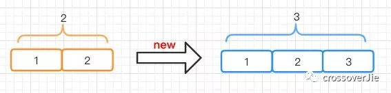

速读摘要
速读摘要其实在大部分情况下这都是没啥问题，无非就是循环的往ArrayList中写入数据而已。比如我们在review代码时发现这里返回的数据有时会高达2000W，这时ArrayList写入的问题就凸显出来了。所以理论上来说它的写入非常高效，将不会有ArrayList中效率极低的数组复制，每次只需要移动指针即可。LinkedList的写入效率高于ArrayList，所以在写大于读的时候非常适用于LinkedList。
ArrayList 踩坑
List<String> temp =new ArrayList();
//获取一批数据
List<String> all = getData();
for(String str : all){
temp.add(str);
}
首先大家看看这段代码有什么问题嘛？
其实在大部分情况下这都是没啥问题，无非就是循环的往 ArrayList 中写入数据而已。
但在特殊情况下，比如这里的 getData() 返回数据非常巨大时后续 temp.add(str) 就会有问题了。
比如我们在 review 代码时发现这里返回的数据有时会高达 2000W，这时 ArrayList 写入的问题就凸显出来了。
填坑指南
大家都知道 ArrayList 是由数组实现，而数据的长度有限；需要在合适的时机对数组扩容。
这里以插入到尾部为例 add(E e)。

ArrayList temp = new ArrayList<>(2) ;temp.add("1");temp.add("2");temp.add("3");
当我们初始化一个长度为 2 的 ArrayList ，并往里边写入三条数据时 ArrayList 就得扩容了，也就是将之前的数据复制一份到新的数组长度为 3 的数组中。
private void grow(int minCapacity) {
// overflow-conscious code
int oldCapacity = elementData.length;
int newCapacity = oldCapacity + (oldCapacity >> 1);
if (newCapacity - minCapacity < 0)
newCapacity = minCapacity;
if (newCapacity - MAX_ARRAY_SIZE > 0)
newCapacity = hugeCapacity(minCapacity);
// minCapacity is usually close to size, so this is a win:
elementData = Arrays.copyOf(elementData, newCapacity);
}
之所以是 3 ，是因为新的长度=原有长度 * 1.5
通过源码我们可以得知 ArrayList 的默认长度为 10.


但其实并不是在初始化的时候就创建了 DEFAULT_CAPACITY=10 的数组。

而是在往里边 add 第一个数据的时候会扩容到 10.
既然知道了默认的长度为 10 ，那说明后续一旦写入到第九个元素的时候就会扩容为 10*1.5=15。这一步为数组复制，也就是要重新开辟一块新的内存空间存放这 15 个数组。
一旦我们频繁且数量巨大的进行写入时就会导致许多的数组复制，这个效率是极低的。
但如果我们提前预知了可能会写入多少条数据时就可以提前避免这个问题。
比如我们往里边写入 1000W 条数据，在初始化的时候就给定数组长度与用默认 10 的长度之间性能是差距巨大的。
我用 JMH 基准测试验证如下：
@Warmup(iterations =5, time =1, timeUnit =TimeUnit.SECONDS)
@Measurement(iterations =5, time =1, timeUnit =TimeUnit.SECONDS)
publicclassCollectionsTest{
privatestaticfinalint TEN_MILLION =10000000;
@Benchmark
@BenchmarkMode(Mode.AverageTime)
@OutputTimeUnit(TimeUnit.MICROSECONDS)
publicvoid arrayList(){
List<String> array =newArrayList<>();
for(int i =0; i < TEN_MILLION; i++){
array.add("123");
}
}
@Benchmark
@BenchmarkMode(Mode.AverageTime)
@OutputTimeUnit(TimeUnit.MICROSECONDS)
publicvoid arrayListSize(){
List<String> array =newArrayList<>(TEN_MILLION);
for(int i =0; i < TEN_MILLION; i++){
array.add("123");
}
}
publicstaticvoid main(String[] args)throwsRunnerException{
Options opt =newOptionsBuilder()
.include(CollectionsTest.class.getSimpleName())
.forks(1)
.build();
newRunner(opt).run();
}
}

根据结果可以看出预设长度的效率会比用默认的效率高上很多（这里的 Score 指执行完函数所消耗的时间）。
所以这里强烈建议大家：在有大量数据写入 ArrayList 时，一定要初始化指定长度。
再一个是一定要慎用 add(int index,E element) 向指定位置写入数据。

通过源码我们可以看出，每一次写入都会将 index 后的数据往后移动一遍，其实本质也是要复制数组；
但区别于往常规的往数组尾部写入数据，它每次都会进行数组复制，效率极低。
LinkedList
提到 ArrayList 就不得不聊下 LinkedList 这个孪生兄弟；虽说都是 List 的容器，但本质实现却完全不同。

LinkedList 是由链表组成，每个节点又有头尾两个节点分别引用了前后两个节点；因此它也是一个双向链表。
所以理论上来说它的写入非常高效，将不会有 ArrayList 中效率极低的数组复制，每次只需要移动指针即可。
对比测试
坊间一直流传：
LinkedList 的写入效率高于 ArrayList，所以在写大于读的时候非常适用于 LinkedList 。
@Benchmark
@BenchmarkMode(Mode.AverageTime)
@OutputTimeUnit(TimeUnit.MICROSECONDS)
publicvoid linkedList(){
List<String> array =newLinkedList<>();
for(int i =0; i < TEN_MILLION; i++){
array.add("123");
}
}

这里测试看下结论是否符合；同样的也是对 LinkedList 写入 1000W 次数据，通过结果来看初始化数组长度的 ArrayList 效率明显是要高于 LinkedList 。
但这里的前提是要提前预设 ArrayList 的数组长度，避免数组扩容，这样 ArrayList 的写入效率是非常高的，而 LinkedList 的虽然不需要复制内存，但却需要创建对象，变换指针等操作。
而查询就不用多说了， ArrayList 可以支持下标随机访问，效率非常高。
LinkedList 由于底层不是数组，不支持通过下标访问，而是需要根据查询 index 所在的位置来判断是从头还是从尾进行遍历。

但不管是哪种都得需要移动指针来一个个遍历，特别是 index 靠近中间位置时将会非常慢。
总结
高性能应用都是从小细节一点点堆砌起来的，就如这里提到的 ArrayList 的坑一样，日常使用没啥大问题，一旦数据量起来所有的小问题都会成为大问题。
所以再总结下：
- 再使用 ArrayList 时如果能提前预测到数据量大小，比较大时一定要指定其长度。
- 尽可能避免使用 add(index,e) api，会导致复制数组，降低效率。
- 再额外提一点，我们常用的另一个 Map 容器 HashMap 也是推荐要初始化长度从而避免扩容。
本文所有测试代码：
https://github.com/crossoverJie/JCSprout/blob/master/src/main/java/com/crossoverjie/basic/CollectionsTest.java